공기업·사기업·해외 기업 지원서를 쓸 때마다 반복해서 입력하는 이름, 연락처, 주소, 병역, 우대사항, 학력, 자격증, 경력을 버튼 한 번으로 채워 주는 크롬 확장 프로그램입니다.
내 정보는 이 컴퓨터의 크롬 안에만 암호화되어 저장되고, 인터넷으로 보내지 않습니다.
자기소개서와 최종 제출은 직접 합니다. 확장은 제출 버튼을 누르지 않습니다.
크롬(Chrome) 브라우저에서만 동작합니다.
1. 설치하기 (처음 한 번, 약 3분)
1-1. 압축 풀기
받은 zip 파일을 풀면 지원서자동입력_v버전 폴더가 나옵니다. 이 폴더를 지우거나 옮기지 않을 곳(예: 문서 폴더)에 두세요. 폴더를 지우면 확장도 동작하지 않습니다.
1-2. 크롬에 불러오기
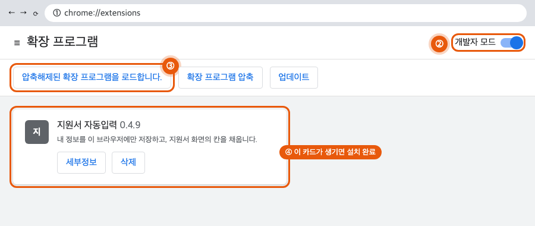
크롬 주소창에 chrome://extensions 를 입력하고 Enter
오른쪽 위 개발자 모드 스위치를 켭니다
왼쪽 위 압축해제된 확장 프로그램을 로드합니다 를 누르고, 1-1에서 푼 폴더를 선택합니다
"지원서 자동입력" 카드가 생기면 설치 완료입니다
크롬 웹스토어를 거치지 않은 확장이라 개발자 모드가 필요합니다. 크롬이 가끔 "개발자 모드 확장 프로그램" 안내를 띄우면 유지를 선택하세요.
1-3. 아이콘 고정하기
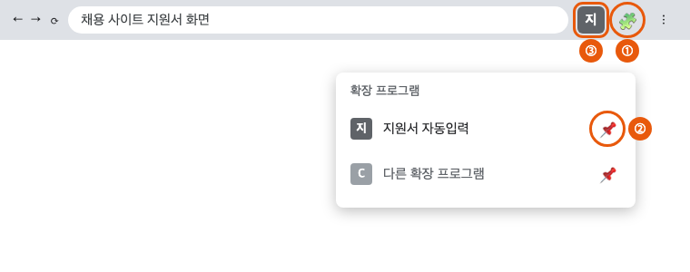
주소창 오른쪽 퍼즐 조각(🧩) 아이콘 클릭
"지원서 자동입력" 옆 핀(📌) 클릭
주소창 옆에 "공" 아이콘이 항상 보입니다
2. 내 정보 저장하기 (처음 한 번, 15~20분)
"공" 아이콘 → 내 정보 설정 을 누르면 설정 화면이 새 탭으로 열립니다.
2-1. 잠금 암호 정하기
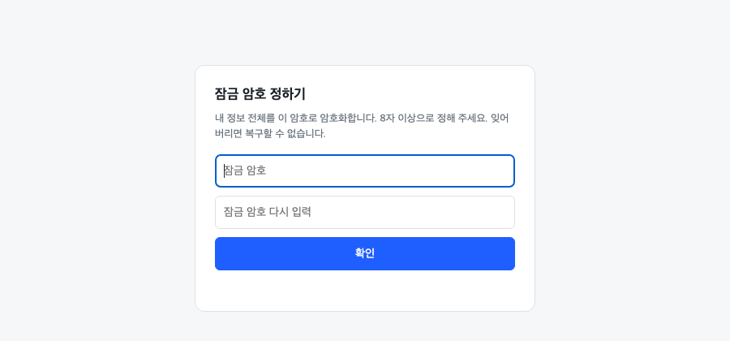
내 정보 전체를 이 암호로 암호화합니다. 8자 이상으로 정하세요.
잠금 암호는 어디에도 저장되지 않아 잊어버리면 복구할 수 없습니다. 따로 적어 두세요.
크롬을 켠 뒤 처음 사용할 때 한 번 입력합니다. 크롬을 닫으면 다시 잠깁니다.
2-2. 내 정보 입력
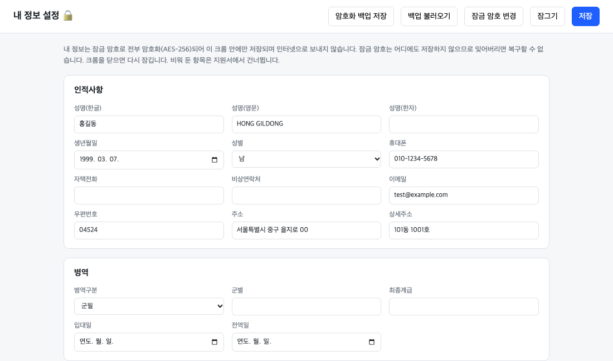
아는 항목만 채우면 됩니다. 비워 둔 항목은 지원서에서 건너뜁니다.
날짜는 달력에서 고르면, 사이트마다 원하는 형식(20240101, 2024.01.01 등)으로 바꿔 넣습니다.
학력·자격증·어학·경력은 + 추가 로 줄을 늘립니다. 지원서 위쪽 줄부터 순서대로 들어가니, 학력은 고등학교 → 대학교 순으로 넣으세요.
우대사항(보훈, 장애, 기초생활수급자, 지역인재 등)은 비대상/대상 을 골라 두면 사이트 질문에 맞춰 자동으로 고릅니다.
다 입력하면 오른쪽 위 저장 을 누릅니다.
기타·추가 항목도 채워 두면 더 많이 채워집니다. 회사 지원서에 자주 나오는 항목을 모아 두었습니다.
- 기타: 취미, 특기, 색약여부, 지원경로, 희망연봉, 신입/경력, 입사 가능일, 추천인(이름·관계·소속) - 병역: 복무형태(현역병 등), 복무 개월 버튼(18/21/24 개월 버튼이 있는 사이트용) - 인적사항: 거주 도시(영문, 예: Seoul) — 외국계 회사 지원서의 Location (City) 칸용 - 학력: 총 이수학점, 본교/분교, 연구분야, 지도교수 - 어학: 외국어, 회화·작문·독해 수준, 시험 주최기관 - 경력: 연봉, 퇴직사유, 경력 연차 - 프로젝트·수상·대외활동·해외경험·컴퓨터 활용능력: + 추가 로 줄을 늘려 입력
새 항목(0.5.76~0.5.79): "온라인 프로필 · 현재 직장"(LinkedIn·GitHub·포트폴리오·웹사이트 주소, 현재 회사 — 해외 지원서용), 주소·학교명·전공·회사명·직위·담당업무·자격증명·상훈명의 "(영문)" 칸(영문 이력서용, 비워도 됨), 증명사진(사진 고르기 → 가운데를 3:4로 잘라 내 정보와 함께 암호화 저장).
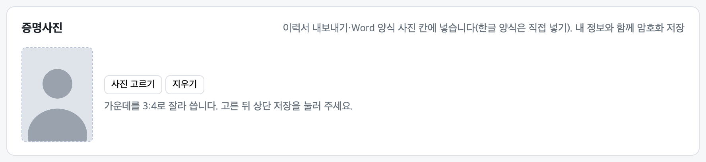
2-3. 자격증은 이미지로 한 번에
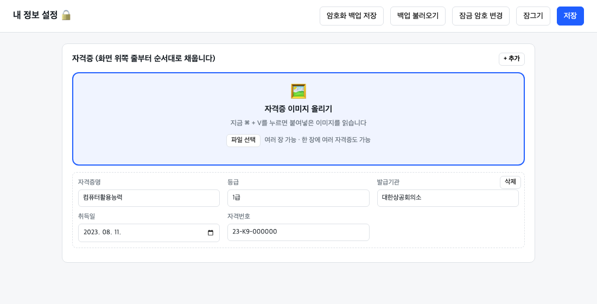
자격증 칸 위의 자격증 이미지 올리기 상자를 쓰면 자격증을 일일이 입력하지 않아도 됩니다.
끌어다 놓기: 자격증 사진·캡처를 상자 위로 끌어다 놓기
붙여넣기: 상자를 클릭한 뒤 ⌘ + V(윈도우는 Ctrl + V)
파일 선택: 여러 장을 한 번에 고를 수 있습니다
한 장에 자격증이 여러 개 있어도 위 → 아래 순서로 나눠 넣습니다. Q-Net 마이페이지 자격 목록이나 대한상공회의소 자격 목록을 캡처해서 붙여넣으면 편합니다.
사진에서 읽은 줄은 노란색으로 표시됩니다. 글자 인식이 가끔 틀리니(특히 자격번호의 영문 한 글자), 저장 전에 노란 줄을 꼭 확인하세요. 못 읽은 글자는 ? 로 표시됩니다.
3. 지원서에서 사용하기
3-1. 채우기
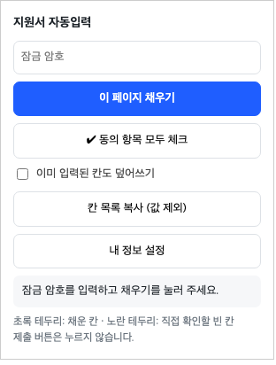
채용 사이트에서 본인인증·로그인까지 직접 마치고 지원서 화면을 엽니다
주소창 옆 "공" 아이콘 클릭
크롬을 켠 뒤 처음이면 잠금 암호 입력
이 페이지 채우기 클릭
버튼
하는 일
이 페이지 채우기
지금 화면의 칸을 읽어 내 정보로 채움
칸 알려 주기
노란 칸을 클릭하고 내 정보 항목을 골라 사이트별 연결을 저장
✔ 동의 항목 모두 체크
개인정보 수집·이용 동의 같은 체크 칸을 한 번에 체크 (내용은 직접 읽어 보세요)
이미 입력된 칸도 덮어쓰기
체크하면 값이 있는 칸도 새로 채움 (기본은 빈 칸만)
칸 목록 복사 (값 제외)
칸 이름과 구조만 복사 (문제 제보용, 내 정보는 안 들어감)
내 정보 설정
설정 화면 열기
3-2. 결과 확인
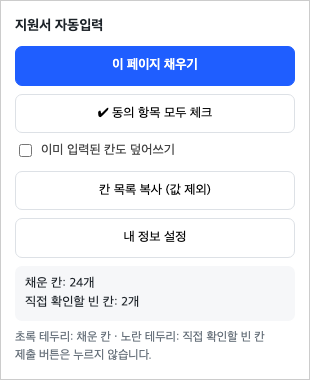
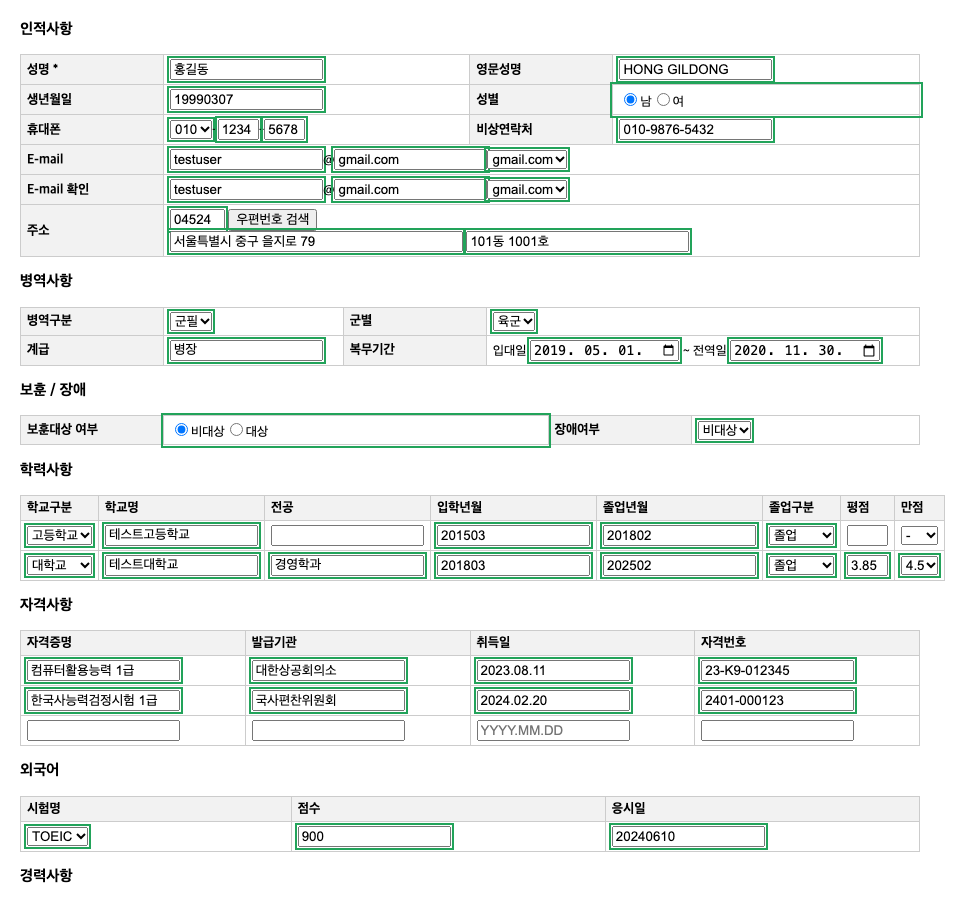
초록 테두리: 자동으로 채운 칸
노란 테두리: 인식하지 못했거나 내 정보에 없는 칸 → 직접 확인
손대지 않는 칸: 주민등록번호, 인증번호, 비밀번호, 자기소개서
KLI Postcodify 주소:이 페이지 채우기를 누르면 파란 우편번호 탭을 열고 저장된 주소를 검색합니다. 우편번호가 일치하는 결과가 하나일 때 자동 선택해 상세주소를 채우고 주소 창의 저장, 이어서 「저장하시겠습니까?」 창의 확인까지 누릅니다. 지원서 제출은 누르지 않습니다. 결과가 없거나 여러 개이면 주소는 클립보드에 복사되므로 직접 검색해 고르세요.
주소 검색 창이 필요한 사이트: 주소를 클립보드에 복사해 둡니다. 우편번호 검색 버튼을 눌러 검색 칸에 ⌘ + V(윈도우는 Ctrl + V) 후 결과를 고르세요.
학교 검색이 필요한 사이트: 학교명을 검색 칸에 넣고 검색까지 합니다. 결과에서 학교를 클릭하세요.
외국계 회사 지원서(Greenhouse 등)의 선택 목록: 국가·도시·보훈·장애·병역처럼 눌러서 고르는 목록은 실제 키 입력으로 골라야 해서, 잠깐 크롬 위쪽에 "디버깅 중" 안내 띠가 떴다가 끝나면 사라집니다. 정상 동작입니다. 개인정보 동의 목록은 직접 고르세요.
확인이 끝나면 자기소개서를 쓰고 제출은 직접 누르세요.
3-3. 칸 알려 주기 (안 채워지거나 잘못 채워진 칸 바로잡기)
확장이 모르는 칸이 있으면 한 번만 알려 주세요. 다음부터 그 사이트에서는 자동으로 채웁니다.
지원서 화면에서 "공" 아이콘 → 칸 알려 주기를 누릅니다. (채우기를 먼저 누르지 않아도 됩니다)
고를 수 있는 칸에 파란 테두리가 생깁니다. 알려 줄 칸을 누르세요. 빈 칸, 잘못 채워진 칸, 목록·버튼 묶음 모두 됩니다.
뜬 창에 지금 인식된 항목이 보입니다. 넣을 내 정보 항목을 고르고 저장을 누릅니다.
- 넣으면 안 되는 칸(예: 회색으로 잠긴 칸)은 이 칸은 건너뛰기 - 잘못 알려 준 칸은 알려 준 연결 지우기
다른 칸도 이어서 누를 수 있습니다. 다 했으면 Esc 또는 끝내기를 누릅니다.
팝업에서 이 페이지 채우기를 다시 누르면 알려 준 대로 채워집니다.
저장되는 것은 "이 사이트의 이 칸 = 항목" 연결뿐이며, 내 정보 값은 저장하지 않습니다.
주민등록번호·비밀번호·인증번호 칸은 알려 줘도 채우지 않습니다.
알려 준 연결은 내 정보 설정 화면 맨 아래 칸 알려 주기로 저장한 연결에서 보고 지울 수 있습니다.
3-4. 잘 안 될 때
상황
해결
"이 페이지에서는 실행할 수 없습니다"
지원서 탭을 새로고침(⌘ + R, 윈도우는 F5)한 뒤 다시 시도
채우기 뒤 "우편번호를 검색해주세요" 알림
우편번호 검색 버튼으로 주소를 직접 고르기 (주소는 복사되어 있음)
학력·자격증 줄이 모자람
사이트의 + 추가하기 를 먼저 눌러 줄을 늘린 뒤 채우기
특정 칸이 계속 안 채워짐
칸 목록 복사 → 배포한 사람에게 보내기 (칸 이름만 복사되고 내 정보는 없음)
잠금 암호를 잊어버림
복구 불가. 설정 화면에서 정보를 다시 입력해야 합니다
3-5. 회사 양식 파일 채우기 (Word · PowerPoint · 한글)
회사가 이력서 양식 파일을 따로 주는 경우에 씁니다.
설정 화면(팝업의 설정 열기) 맨 위 회사 양식 파일 채우기 칸에 양식 파일을 끌어다 놓거나 파일 선택 으로 고릅니다.
표의 칸 이름(성명·생년월일·연락처·주소 등)을 보고 (만 )·(우편번호)·~ 같은 안내 글자만 있는 칸도 빈 칸으로 보고 오른쪽(또는 아래) 빈 칸에 내 정보를 넣고, '학교명·전공·기간'처럼 칸 이름이 한 줄에 늘어선 표는 아래 빈 줄에 학력·자격증·경력을 차례로 넣습니다.
아래에 채운 결과 미리보기(양식의 표 배치, 새로 채운 칸은 초록색)가 나옵니다. 확인한 뒤 내려받기 를 누르면 원본은 그대로 두고 파일이름_채움 파일이 내려받기 폴더에 생깁니다. 맺음말의 "지원자 :" 옆에는 이름을 넣고, 사진·자기소개서·가족사항·서명은 파일에서 직접 채웁니다.
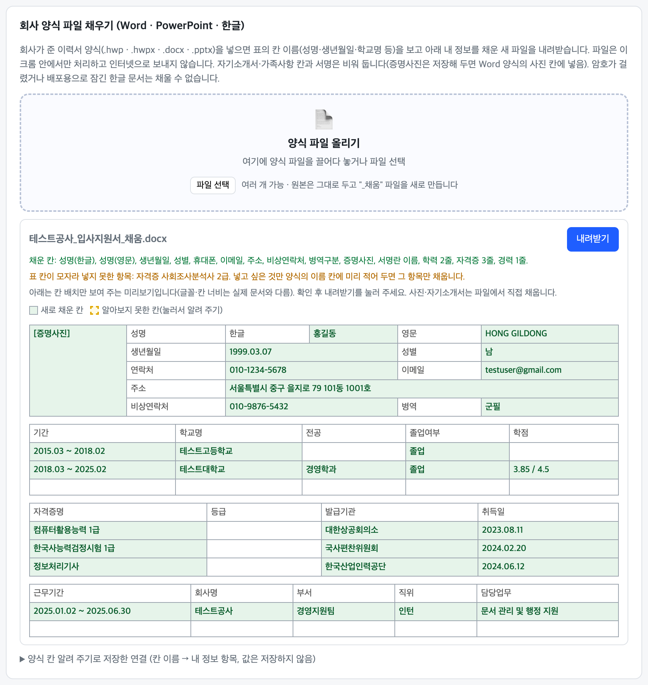
자격증을 골라 넣기: 자격증이 표 칸보다 많으면 저장된 순서대로 들어가고 남은 것은 "표 칸이 모자라 넣지 못한 항목"으로 알려 줍니다. 넣고 싶은 자격증만 양식의 자격증 이름 칸에 미리 적어 두면(예: "컴활 1급", "정보처리기사") 그 자격증의 취득일·발행기관만 채우고, 남은 빈 줄에는 나머지를 차례로 넣습니다. 어학 시험 표도 같습니다.
파일
가능 여부
한글 .hwp · .hwpx · Word .docx · PowerPoint .pptx
바로 채움
암호가 걸린 한글 문서 · 배포용 한글 문서
채울 수 없음(한글에서 암호를 푼 뒤 넣기)
옛 Word .doc · PowerPoint .ppt
Word·PowerPoint에서 .docx · .pptx 로 저장한 뒤 넣기
웹 지원서 사진 첨부(0.5.83): 증명사진을 저장해 두면 "이 페이지 채우기" 때 사진·photo 첨부 칸에 자동으로 올립니다(자격증 사본·증명서·포트폴리오·이력서 같은 서류 칸은 건드리지 않음). 팝업에 "증명사진 n곳 첨부"가 나오면 사이트의 사진 미리보기를 확인하고, 자르기 창이 뜨면 직접 맞춥니다.
자동으로 함께 채우는 것: 맺음말·동의서의 "20 년 월 일"(오늘 날짜), "지원자/동의인 : (서명)"(이름, 서명은 비움), 표가 아닌 줄글 양식의 "성명 : ______" 같은 줄, Word 양식의 "사진" 칸(증명사진을 저장해 둔 경우. 한글 양식의 사진은 직접 넣기).
칸 알려 주기: 미리보기에서 노란 점선 칸은 알아보지 못한 칸입니다. 눌러서 넣을 내 정보 항목을 고르면 바로 다시 채우고, 다음부터 다른 양식에서도 같은 칸 이름이면 자동으로 채웁니다(칸 이름과 항목만 저장, 값은 저장하지 않음). 저장한 연결은 같은 구역 아래 목록에서 지울 수 있습니다.
3-6. 내 이력서 내보내기 (Word · PDF)
회사 양식이 없을 때 저장된 내 정보로 일반 이력서를 만듭니다.
설정 화면의 내 이력서 내보내기 에서 Word(.docx)로 내보내기 또는 PDF로 저장 을 누릅니다.
이력서에 넣을 항목 고르기 가 열립니다. 구역(병역·학력·자격사항 등)과 줄(자격증 하나하나)마다 체크를 켜고 끕니다. 모두 선택 / 모두 해제 도 있습니다. 고른 결과는 크롬을 닫기 전까지 기억합니다.
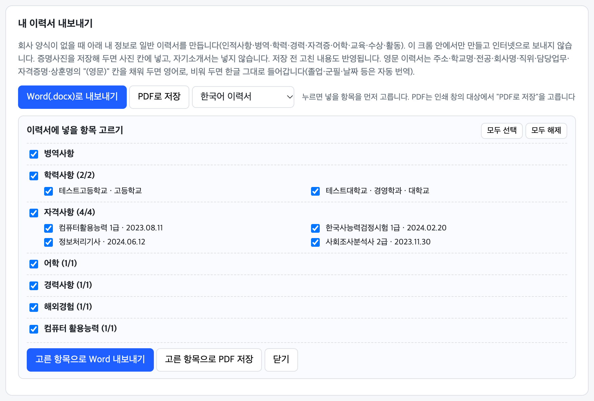
옆의 언어 선택에서 영문 이력서 (English) 를 고르면 영어 이력서가 됩니다(학교명·회사명 등은 "(영문)" 칸을 채워 둔 것만 영어, 졸업·군필·날짜는 자동 번역).
고른 항목으로 Word 내보내기 는 이력서_이름.docx 파일을 내려받고, 고른 항목으로 PDF 저장 은 인쇄 창을 엽니다(대상에서 PDF로 저장 선택).
증명사진을 저장해 두면 한국어 이력서에 들어갑니다. 자기소개서·서명은 파일에서 직접 넣습니다. 이력서는 이 크롬 안에서만 만들고 외부로 보내지 않습니다.
4. 업데이트하기
새 버전 zip을 받으면:
새 zip을 풀어 기존 폴더와 바꿔 넣기(같은 위치, 같은 폴더 이름)
chrome://extensions → "지원서 자동입력" 카드의 새로고침(⟳) 클릭
0.5.65부터 "디버거" 권한이 추가되었습니다. 새로고침 뒤 크롬이 권한을 다시 묻거나 확장을 꺼 두면 사용 으로 켜 주세요.
내 정보는 크롬 안에 그대로 남아 있습니다. 혹시 모르니 업데이트 전에 설정 화면의 암호화 백업 저장 으로 백업해 두세요.
5. 개인정보 안내
내 정보는 이 컴퓨터의 크롬 안에만 AES-256으로 암호화되어 저장됩니다. 일반 자동입력은 프로필 정보를 외부로 보내지 않습니다.
Postcodify 우편번호 자동검색을 사용하는 경우, 주소 검색어는 Postcodify 주소 서비스로 전달됩니다. 저장된 우편번호는 검색 결과를 고르는 데 이 컴퓨터 안에서만 사용하며, 이름·연락처 등 다른 프로필 항목은 검색어로 보내지 않습니다. Postcodify가 검색 요청 처리에 사이트 도메인 등 기술 정보를 받을 수 있습니다.
칸 알려 주기 기능은 사이트 주소·칸 식별값·내 정보 항목 경로만 별도로 저장하며, 입력값은 저장하지 않습니다.
자격증 이미지 글자 인식도 이 컴퓨터 안에서만 처리합니다.
회사 양식 파일 채우기도 이 컴퓨터의 크롬 안에서만 파일을 열고 고칩니다. 양식 파일과 내 정보를 외부로 보내지 않습니다.
디버거 권한은 채우기 버튼을 누른 탭에서 선택 목록을 고를 때만 잠깐 붙였다가 바로 뗍니다. 외부로 보내는 것은 없습니다.
백업 파일도 암호화되어 있어 잠금 암호 없이는 읽을 수 없습니다.
다른 사람과 같이 쓰는 컴퓨터에서는 쓰고 나서 설정 화면의 잠그기 를 누르거나 크롬을 닫으세요.
글자 인식: tesseract.js (Apache-2.0) · 국가자격 종목명: 한국산업인력공단 국가자격 종목 목록(공공데이터포털)